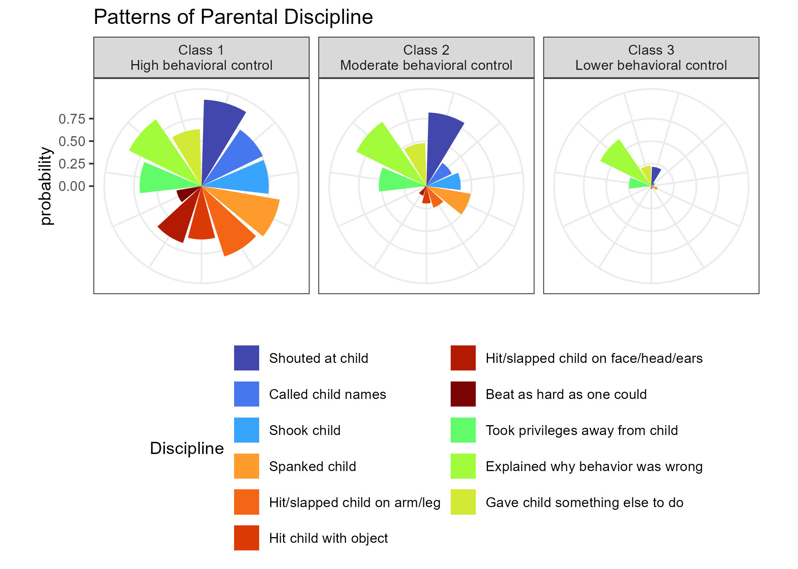
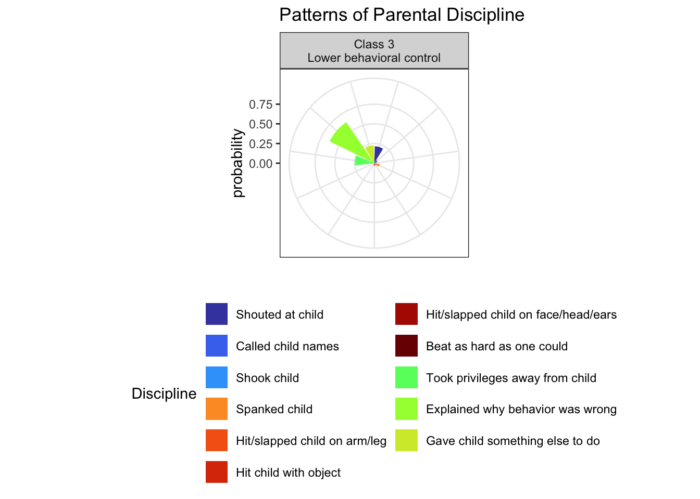
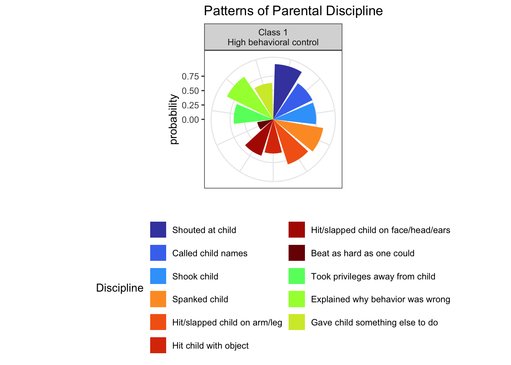

Countries in UNICEF MICS Data
Patterns Of Caregiver Aggressive And Nonaggressive Discipline
Scroll to explore ⬇️
Background
Caregivers use a variety of disciplinary methods to respond to undesired child behavior.
Many caregivers use nonaggressive forms of discipline, such as verbal reasoning and redirection. Some caregivers use aggressive forms of discipline, such as spanking and yelling.
However, most caregivers use a combination of aggressive and nonaggressive discipline.
To date, a disproportionately small number of caregiver discipline studies are conducted in low- and middle-income countries (LMICs), and few studies in low-resource contexts examine aggressive and nonaggressive behaviors simultaneously.
Objective
This study (Ward et al., 2022) aims to elucidate caregiver patterns of 11 disciplinary behaviors used in LMICs, and examine how these patterns relate to child outcomes and household characteristics.
Participants and setting
Data came from the fourth and fifth rounds of UNICEF Multiple Indicator Cluster Surveys (MICS) distributed between 2009 and 2017 (N = 218,824 respondents across 63 countries). Focal children were 3–4 years old.
Methods
Patterns of disciplinary behaviors were estimated using a multilevel latent class analysis (LCA). Multinomial regression analyses examined associations of disciplinary patterns with caregiver-reported child outcomes and household characteristics.
Results
Overall Results
The LCA suggested caregiver discipline fell into three overall patterns: high behavioral control, moderate behavior control, and lower behavioral control.
Lower Behavioral Control Associated With Most Advantageous Outcomes
The lower behavioral control class–associated with low use of psychological discipline, low use of physical discipline, and some use of nonviolent discipline–was associated with the most advantageous child outcomes and household socio-demographic characteristics.
High Behavioral Control Associated With Most Disadvantageous Outcomes
The high behavioral control class–associated with higher use of psychological discipline, physical discipline, and nonviolent discipline–was associated with the most disadvantageous child outcomes and household characteristics.
Conclusion
Efforts should be employed to reduce aggressive behaviors and promote positive parenting among caregivers in LMICs.

| Discipline | Type |
|---|---|
| “Shouted at child” | psychological |
| “Called child names” | psychological |
| “Shook child” | physical |
| “Spanked child” | physical |
| “Hit/slapped child on arm/leg” | physical |
| “Hit child with object” | physical |
| “Hit/slapped child on face/head/ears” | physical |
| “Beat as hard as one could” | physical |
| “Took privileges away from child” | non-violent |
| “Explained why behavior was wrong” | non-violent |
| “Gave child something else to do” | non-violent |
flowchart TB classDef yellow fill:#FFC20E,stroke:#000000,stroke-width:2px,color:#000000; classDef blue fill:#374EA2,stroke:#000000,stroke-width:2px,color:#FFFFFF; classDef green fill:#00833D,stroke:#000000,stroke-width:2px,color:#FFFFFF; classDef orange fill:#D86018,stroke:#000000,stroke-width:2px,color:#FFFFFF; classDef red fill:#9A3324,stroke:#000000,stroke-width:2px,color:#FFFFFF; class1((class 1)):::yellow --> outcomes((child <br>outcomes)):::blue class2((class 2)):::yellow --> outcomes class3((class 3)):::yellow --> outcomes household((household <br>characteristics)):::orange --> class1 household --> class2 household --> class3 linkStyle 0,1,2,3,4,5 stroke:#000000,stroke-width:3px;




flowchart TB classDef yellow fill:#FFC20E,stroke:#000000,stroke-width:2px,color:#000000; classDef blue fill:#374EA2,stroke:#000000,stroke-width:2px,color:#FFFFFF; classDef green fill:#00833D,stroke:#000000,stroke-width:2px,color:#FFFFFF; classDef orange fill:#D86018,stroke:#000000,stroke-width:2px,color:#FFFFFF; classDef red fill:#9A3324,stroke:#000000,stroke-width:2px,color:#FFFFFF; subgraph programs[interventions] interventions:::blue --> |"reduce"| aggressivebehavior[aggressive parenting]:::red interventions:::blue --> |"increase"| positiveparenting[positive parenting]:::green end programs --> |"improve"| outcomes[child outcomes]:::yellow linkStyle 0 stroke:#000000,stroke-width:3px,font-size:18px,color:red; linkStyle 1,2 stroke:#000000,stroke-width:3px,font-size:18px,color:green; style programs fill: #F2F2F2
References
Ward, K. P., Lee, S. J., Grogan-Kaylor, A. C., Ma, J., & Pace, G. T. (2022). Patterns of caregiver aggressive and nonaggressive discipline toward young children in low- and middle-income countries: A latent class approach. Child Abuse & Neglect, 128. https://doi.org/10.1016/j.chiabu.2022.105606